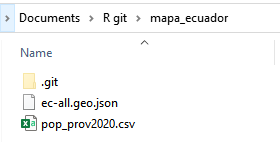
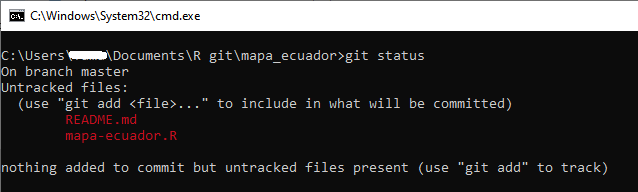
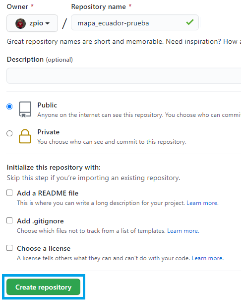

🦄 Apuntes Introductorio de Git y GitHub
- Qué es Git?
- Descargar e Instalar Git
- Las áreas principales de Git
- Directorio de trabajo (working directory)
- Abrir el Intérprete de Comandos cmd
- Inicializando un repositorio con
git init - Inspección del repositorio con
git status - Agregar archivos o cambios al repositorio con
git add - Crear un commit del repositorio con
git commit - Ver historial de commits con
git log - Que es GitHub?
- Publicar un repositorio Git en GitHub
- Clonar un repositorio de GitHub
- Referencia
🔥 Qué es Git?
Git es un software de control de versiones que sirve para guardar cambios en los archivos de un proyecto a lo largo del tiempo.
🔥 Descargar e Instalar Git
Descargar e instalar Git es como instalar cualquier otro programa, debe seguir el asistente de instalación.
🔥 Las áreas principales de Git

Git tiene tres areas principales: el Espacio de Trabajo, el área de Preparación (Staging Area) y el Repositorio.
El flujo de trabajo básico en Git:
Modificas o creas una serie de archivos en el espacio de trabajo de tu maquina.
Preparas los archivos, añadiéndolos al área de preparación (Staging Area).
Envias los archivos preparados al repositorio git de tu maquina.
Si una versión concreta de un archivo está en el repositorio de Git, se considera confirmada (committed).
Si ha sufrido cambios desde que se obtuvo del repositorio, pero ha sido añadida al área de preparación, está preparada (Staged).
Y si ha sufrido cambios desde que se obtuvo del repositorio, pero no se ha preparado, está modificada (Modified).
🔥 Espacio de trabajo
El espacio de trabajo es la carpeta de tu proyecto con todos los archivos que estamos haciendo seguimiento.

🔥 Abrir el Intérprete de Comandos cmd
Para empezar a dar seguimiento a nuestros proyectos debe abrir el intérprete de comandos cmd. La opción facil de abrir el cmd es escribir cmd en la barra y enter)

Se abrirá la clásica ventana negra.

La ventana del cmd indica la ruta del directorio de trabajo seguido de un guión (_) parpadeante, indicándo que esta listo para que escriba comandos.
El siguiente paso es escribir git init
🔥 Inicializando un repositorio con git init
El comando git init crea un nuevo repositorio de Git, es decir, converte nuestro proyecto sin versión en un repositorio de Git.

Al escribir git init internamente se crea dos areas: Staging Area (área de preparación) y la carpeta oculta .git que es Area Repositorio.
Esto lo podemos verificar por que en la carpeta de nuestro ordenador donde tenemos el proyecto se agrega una carpeta oculta .git.

🔥 Inspección de nuestro repositorio con git status
El comando git status proporcionará información si tiene archivos nuevos o modificados y que aún no se han confirmado (committed).
Si se agrega un nuevo archivo, git status mostrará esa información en color rojo indicando que son archivos sin seguimiento.

Nota: Cuando se inicia un repositorio en Git se crea una “linea en el tiempo” llamada “branch” (rama) que va almacenando todo el historial. Esta rama se llama MASTER.
🔥 Agregar archivos o cambios al repositorio con git add
El comando git add agrega archivos nuevos o modificados al área de preparación (Staging Area). Se puede agregar todos archivos o cambios de un solo golpe o uno por uno.
El comando git add . agrega todos los archivos nuevos y modificados de golpe. El punto ( . ) indica que tome todos los archivos de la carpeta actual.
Con git add [nombre del archivo] (ej. git add archivo.txt) agregas archivos de forma individual.

Si ejecuta git status nuevamente veremos que los archivos ahora estan en color verde indicando que ya estan en Staging Area listo para la confirmación (commit). Además indica que son nuevos archivos new file. Si en este punto modificamos estos archivos y aplicamos nuevamente git status mostrará el estado: modified.

🔥 Crear un commit del repositorio con git commit
El comando git commit -m "mensaje del commit" crea una confirmación (commit) o copia instantánea del repositorio en un momento específico. Las confirmaciones (commits) incluyen muchos metadatos además del contenido y el mensaje, como el autor, la marca de tiempo y más.
Hay que escribir un mensaje descriptivo: git commit -m "descripción del mensaje"
Si nunca has usado git y es la primera vez que lo instalas en tu ordenador, el primer commit te pedirá que te identifique con un correo y un nombre. El primer commit en este caso particular no se ejecutará aún.


Para esto debes escribir los siguientes comandos en el cmd:
Primero:

Luego:

Nuevamente tendremos que ejecutar git commit pero ahora le agregaremos un mensaje descriptivo con git commit -m "descripción del mensaje"

Mostrará el mensaje con la confirmación de los cambios que hayamos hecho en nuestros archivos.
🔥 Ver historial de commits con git log
El comando git log da una lista de commits hechos sobre ese repositorio en orden cronológico inverso, las más recientes se muestran al principio, esta muestra un Identificador del commit, Autor, Fecha de realización, Mensaje enviado.
Tambien podemos usar git log --oneline


🔥 Nuevos commits
Si en dias posteriores hacemos nuevos cambios en nuestros archivos o agregamos nuevos archivos o creamos nuevas carpetas, para guardar los cambios en nuestro repositorio de Git hay que seguir los mismo pasos con excepcion que ya no usaremos el comando git init porque el repositorio ya esta creado, ni tampoco tenemos que poner nuestro correo y nombre porque ya no los pedirán.
Los pasos serian:
A continuacion presento un ejemplo donde hemos agregado dos archivos mas a nuestro carpeta local y veremos que Git nos indicará que debemos agregar estos nuevos archivos al repositorio de Git.



En cada confirmación de cambios (commit), Git almacena una instantánea de tu trabajo preparado.
🔥 Que es GitHub?
GitHub es un sitio web para alojar proyectos utilizando el sistema de control de versiones Git.
Primero hay que crearse una cuenta como cualquier red social.

🔥 Publicar un repositorio Git en GitHub
Para publicar un repositorio en GitHub debe seguir los siguientes pasos:
Primero: crear un repositorio en GitHub

Agregamos un nombre al repositorio, no necesariamente debe tener el mismo nombre de la carpeta en la que trabajamos desde el ordenador.

Preferiblemente no darle check a la seccion de Add a README file para que salga la siguiente guia:

Segundo: Subir el repositorio Git a GitHub
Debemos ejecutar los comandos que estan en el rectangulo azul en el cmd para poder subir nuestro repositorio Git a GitHub.
El comando git remote add origin https://github.com/zpio/mapa_ecuador_prueba.git solo debe ejecutarse solo una vez para subir el repositorio a GitHub. Para futuras modificaciones en el repositorio y subirlo a GitHub ya no se debe ejecutarse.
Lo que hace git remote add origin [url] es añadir un repositorio de la nube (github) a nuestro repositorio local.
¿Te acuerdas que nuestra rama principal se llama MASTER? Pues ahora la vamos a renombrar a “main” debido a un cambio en la plataforma de GitHub. Para logralo hay que usar el comando git branch -M main para forzar el cambio de nombre.
El comando git push publica o sube los cambios de nuestro repositorio local a GitHub.
Si es la primera vez que subimos un repositorio a GitHub, al ejecutar git push -u origin main nos pedirá hacer login en GitHub.

Una vez hecho login en GitHub ya se subirá el repositorio a GitHub.

Al actualizar la pagina de github aparecerá asi:

🔥 Para futuras modificaciones
Si en los dias posteriores hacemos nuevos cambios y commits del proyecto, para subir los cambios a GitHub ya no debe ejecutarse ni git remote ni git branch -M main solo debe ejecutarse git push origin main. En resumen seria asi:
Y para subir a GitHub solo ejecutar:
🔥 Clonar un repositorio de GitHub
Si deseas tener en un ordenador todo un repositorio de un proyecto de GitHub y trabajar sobre el, puedes usar el comando git clone seguido de una url del respositorio de GitHub.
Al clonar un repositorio se te crea una carpeta en tu ordenador con todos los archivos que tenga dicho repositorio.
Primero debes decidir en que parte de tu ordenador quieres poner el repositorio a clonar y debes abrir el cmd:
Segundo debemos ir al sitio web del repositorio de GitHub:
https://github.com/zpio/mapa-ecuador
En la seccion de code esta la URL que necesitas para clonar el repositorio:
https://github.com/zpio/mapa-ecuador.git

En el cmd debes escribir git clone seguido de la url:

En tu directorio de trabajo aparecerá la carpeta de todo el repositorio.
Esto es la parte introductoria, hay mucho contenido que revisar.
🔥 Referencia
Libro de Git: https://git-scm.com/book/es/v2
Documentacion de Git y GitHub https://github.com/git-guides/